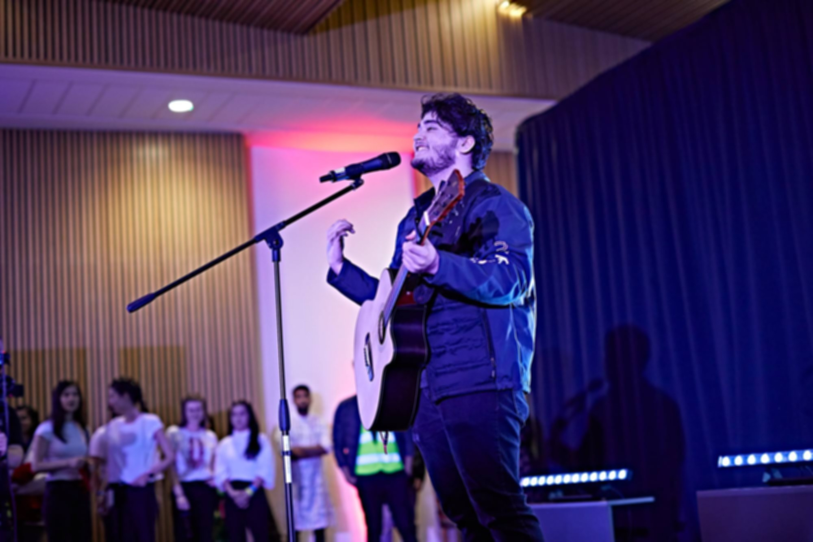
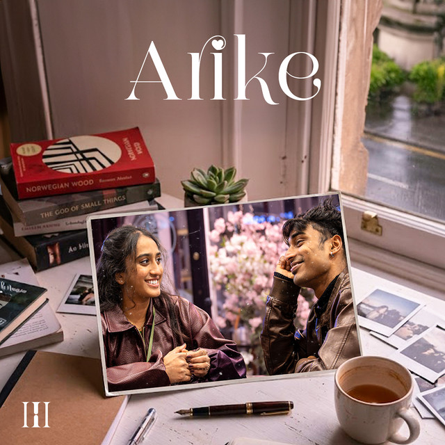
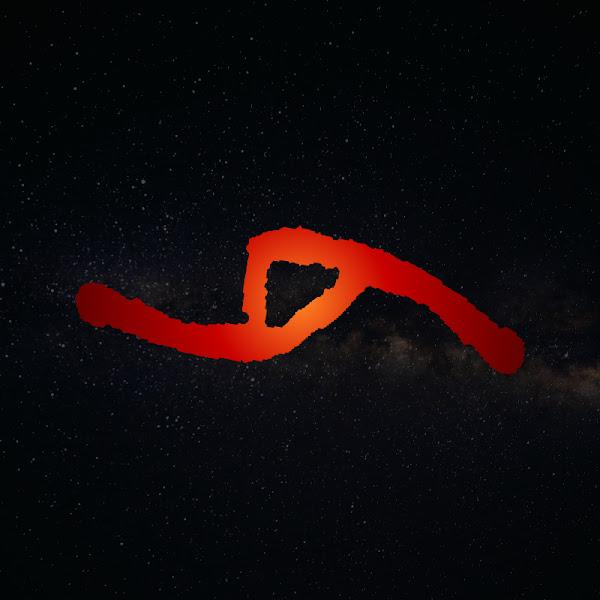
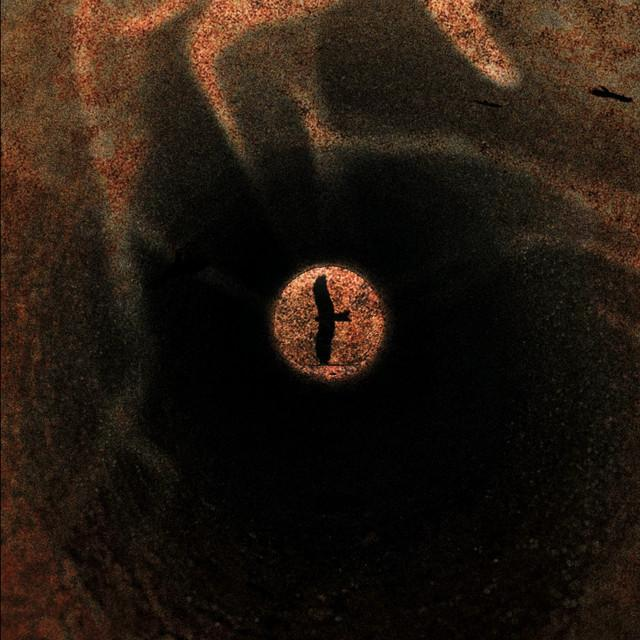
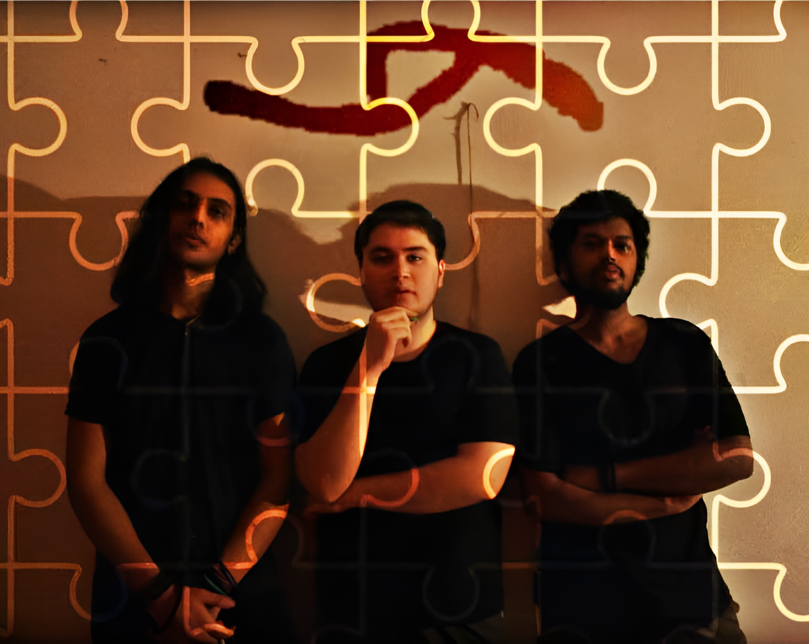
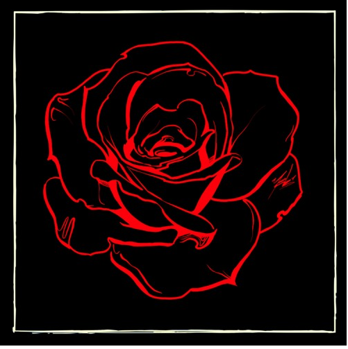
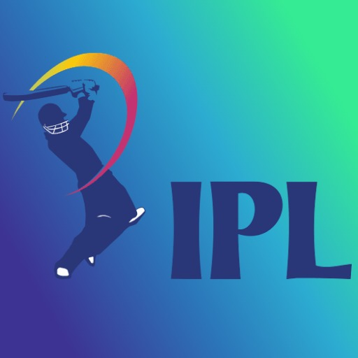
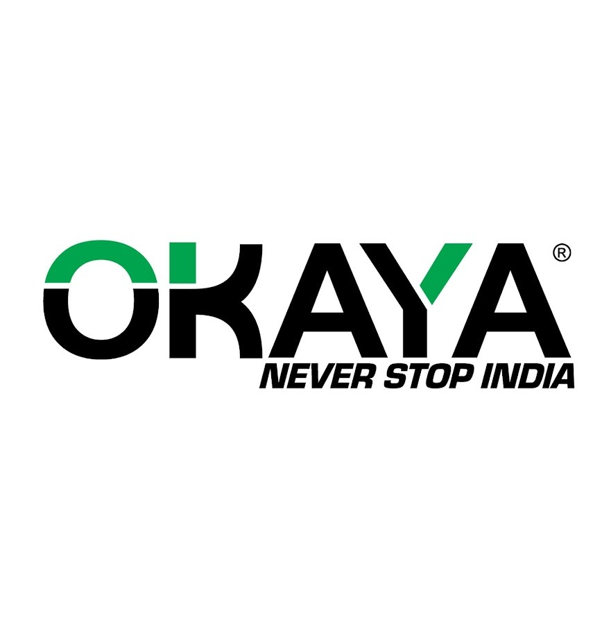
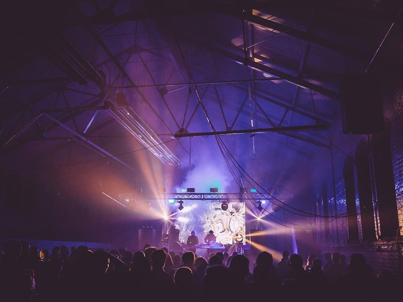

Artist releases & collaborations
Good music.
Real connection.
I’m Udit. A music producer and audio engineer based in Leeds, United Kingdom.
I work with artists to turn an idea into something you can feel. From the first melody to the final mix, I bring a creative ear and a considered approach to every detail.
I studied Creative Music Production at the University of Huddersfield, developing my practice across music production, sound design and audio engineering.
Let’s make something together ↗
LISTEN / ARTIST PROJECTS
Music & artists More to discover.
Explore my artist releases, collaborations and band projects. Listen here or open each profile on Spotify for the full catalogue.
The trio · South Asian roots and alternative pop
Third Horizon
Full artist profile on Spotify ↗The band · Acoustic pop and heartfelt songwriting
REAL OUTCASTS
- my loveREAL OUTCASTS
- not enoughREAL OUTCASTS
ALBUM PRODUCTION / MIXING & MASTERING
Aks
Listen to Aks on Spotify ↗MIXING COLLABORATION
JAENA
Mixing work for JAENA’s music.
Explore JAENA on Spotify ↗ONGOING COLLABORATION
Arjun Pratap Chauhan
An artist I’m currently working with. Explore his music below.
Explore Arjun on Spotify ↗Made to move you.

MUSIC / PRODUCTION
Third Horizon
I co-founded Third Horizon with two fellow musicians, bringing our different voices together through South Asian roots, alternative pop and atmospheric production.
While my bandmates spoke the language we sang in, I didn’t. Singing alongside them meant learning unfamiliar words, listening closely to their pronunciation and finding my own connection to the lyrics. It became one of the most rewarding parts of making music together: sharing a song across a language barrier.
Our releases include Arike, Polika and En Nizhal — three songs that mark the beginning of our story, with more music still to come.
Third Horizon — music & releases ↗
MUSIC / PRODUCTION
Real Outcasts
An acoustic-pop trio formed in New Delhi in winter 2020. Our work brings together lyric writing, melodies and production, including our debut single “not enough” and the album Selective Puzzles.
For our album Selective Puzzles, I recorded, produced, mixed and mastered the songs.
Also featuring mixing and mastering work for Ashtrays & Heartbreaks by starstruckstark and indie tracks by Arnav Sharma.
Every artist.
A different world.

Aks
Indie-pop · Full production, mixing & mastering.
From pre-production to the final master: co-writing melodic hooks and combining synths, live instruments and vocal harmonies, with mixing focused on clarity, impact and stereo space.

Selective Puzzles
Real Outcasts · Recording, production, mixing and mastering.

Ashtrays & Heartbreaks
starstruckstark · Mixing and mastering for an indie-folk album.
Stories you can
hear.
Sound design, dialogue replacement (ADR) and film music. Animation projects explore sampling, reverberation, character voices and background scoring.
Kandanar Kelan
Portfolio film
Destiny
University project
Spring Film
University project
Less Than Human
University project · Sound design & ADR
Beyond the record.
Composing, producing and mixing music for television advertisements and promotional films.



LIVE SOUND / NO BOUNDS
In the room.
In the room.
In the moment.
Live sound crew experience spanning equipment setup and mixing for artists and producers, working within wider production teams.
Console experience includes DiGiCo SD8 and Yamaha CL5.
A practice built
on listening.
Third Horizon
Co-founder · Production, audio engineering, vocals and songwriting across the trio’s releases.
Real Outcasts
Band member · Songwriting, recording, production, mixing and mastering.
University of York
Master of Music Management and Marketing
University of Huddersfield
Creative Music Production
High-end TV music editor training programme
Netflix HQ
English & Hindi
Native or bilingual proficiency
From the studio.
To the screen. To the stage.
01Music production & engineering+
Artist-led production, recording, mixing and mastering. Building the arrangement and refining the details while keeping the artist’s voice at the centre.
02Sound design, ADR & film music+
Sound design and ADR for animation projects including “Less Than Human” and “Destiny”, alongside background scoring for “Spring” and other university projects.
03Sonic branding+
Composition, production and mixing of background music for advertisements and promotional videos, with portfolio work for IPL, Okaya and Microtek.
04Live sound+
Equipment setup and live mixing as part of production crews, working with consoles including the DiGiCo SD8 and Yamaha CL5.
Have a sound
in mind?
Let’s make it happen. ↗
BASED IN
Leeds, United Kingdom